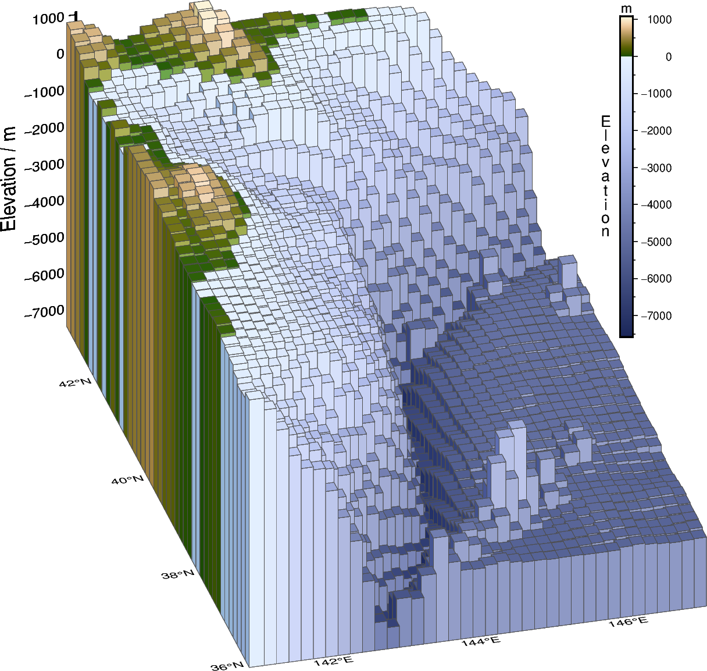

Note
Go to the end to download the full example code.
3-D bar plot
A 3-D bar plot can be created from any collection of three-dimensional tabular data. The data points can lie on a regular grid or be irregularly scattered. A special case is creating such a 3-D bar plot based on a grid. This can be done in two steps:
Converting the grid into a table via
pygmt.grd2xyz, with columns “x”, “y”, and “z” for longitude, latitude, and the quantity displayed by the grid, respectively.Plotting this table as bars in 3-D using
pygmt.Figure.plot3d.
The bars can be outlined, and the fill can be one color or based on a quantity using a colormap. For the latter, a fourth column needs to be added containing the values of the quantity for the color-coding.
import pygmt
from pygmt.params import Position
# Define a study area around northern Japan with large elevation changes
region = [141, 147, 36, 43]
# Download a grid for the Earth relief with a resolution of 10 arc-minutes
grid = pygmt.datasets.load_earth_relief(resolution="10m", region=region)
# Convert the grid into a pandas DataFrame, with columns for longitude ("x"), latitude
# ("y") and elevation ("z")
grd_df = pygmt.grd2xyz(grid=grid)
zmin = grd_df["z"].min() - 50
zmax = grd_df["z"].max() + 50
# Add a fourth column "color" for the quantity used for the color-coding of the bars,
# here we use the elevation ("z")
grd_df["color"] = grd_df["z"]
# Create a 3-D bar plot with color-coding
fig = pygmt.Figure()
fig.basemap(
region=[*region, zmin, zmax],
projection="M10c",
zsize="8c",
frame=["WSneZ", "xaf", "yag", "za1000f500+lElevation / m"],
perspective=(195, 30),
)
pygmt.makecpt(cmap="SCM/oleron", series=(zmin, zmax))
fig.plot3d(
data=grd_df,
# Use "o" to plot bars and give the desired size
# The base of the bars is set via "+b"
style=f"o0.34c+b{zmin}",
cmap=True,
pen="0.01p,gray30",
perspective=True,
)
fig.colorbar(
frame=["xa1000f500+lElevation", "y+lm"],
position=Position("TR", cstype="inside", offset=1.4),
orientation="vertical",
length=7,
move_text="label",
label_as_column=True,
)
fig.show()
Total running time of the script: (0 minutes 0.909 seconds)